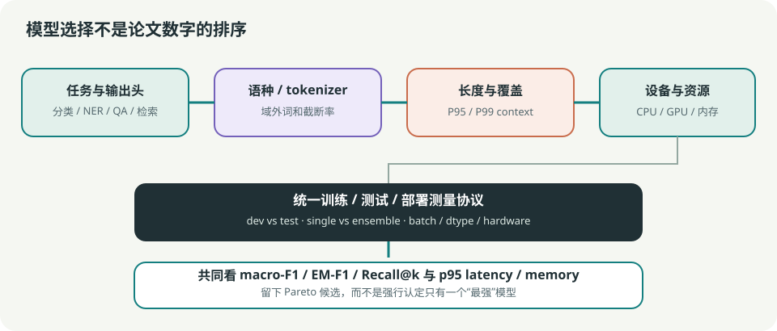

1. 一个常见陷阱：不同论文的“最好成绩”不可直接相减
比如两篇论文都报告 GLUE，但一篇是单模型 dev 集上多个随机种子的中位数，另一篇是 test leaderboard 的多模型 ensemble；它们的任务覆盖、训练数据与额外调优可能不同。同样，两篇论文都报告“快 3 倍”，其中一个是 GPU batch=32、长度=128 的吞吐，另一个是 CPU batch=1、长度=512 的单条延迟。这些数字不能构成公平排行榜。
模型选型的真正问题是：在同一个测试协议、同一个部署约束下，哪一个候选满足精度目标，并在成本方面具有优势？这要求同时比较目标任务、输入长度、训练数据、硬件、tokenizer 和输出接口。

2. 四条选择轴：目标、语种、长度、资源
| 选择轴 | 要确认的事实 | 典型风险 |
|---|---|---|
| 任务与输出 | 单句分类、句对、NER、抽取式 QA、检索表示 | 使用未训练的任务头，或把 CLS 向量当作已校准句向量 |
| 语言与领域 | 中文、英文、多语言、混合代码；金融/医疗/法律等领域 | Tokenizer 碎片化、域外词汇、训练数据污染 |
| 序列长度 | 长度 P50/P95/P99，任务是否需要跨段落关系 | 默认 512 截断使重要信息丢失 |
| 部署约束 | CPU/GPU、batch、内存、吞吐、p95 延迟和能源预算 | 仅凭参数量预测速度或显存 |
向量检索需要特别说明：普通 MLM 预训练的 Encoder 可以提供 hidden state，但未必产生适合余弦检索的句向量。若要文本相似度或 dense retrieval，可能还需要对比学习、双塔训练或专门微调的 embedding checkpoint。
3. 模型家族不是简单的“越来越大”
| 家族 | 核心设计变化 | 选型时关注 |
|---|---|---|
| BERT | 双向 Encoder、MLM、原始 NSP | 兼容性、训练接口和基准线 |
| RoBERTa | 保留 Encoder/MLM，强化数据、动态遮盖、训练配方 | 预训练配方与 tokenizer 差异 |
| ELECTRA | Generator 生成候选替换，Discriminator 做 replaced token detection | 低计算预算下的预训练效率；推理只保留 Discriminator |
| ALBERT | Embedding 分解、跨层参数共享、SOP | 参数存储与实际运算量不是同一指标 |
| DeBERTa | 内容/相对位置解耦注意力及增强的训练设计 | 相对位置实现、不同版本的任务适配 |
| DistilBERT | 从教师模型蒸馏到较小学生模型 | 延迟、内存、特定任务精度损失 |
| ModernBERT | 现代化 Encoder 结构、较长原生上下文与新的训练配方 | 长文本支持、kernel 可用性和任务适配 |
一行“创新点”不足以判断谁更强。ALBERT 的参数共享减少参数存储，但多层前向仍需执行，不意味着计算层数也减少；DistilBERT 的层数减少通常有利于推理速度，但实际收益依 kernel 与部署条件而变。ModernBERT 具有较长原生上下文，不表示任意 8192-token 文档都能以与短文相同成本处理。
4. 任务头和 tokenizer 必须与 checkpoint 配套
文本分类一般用序列级分类头；NER 使用每个 token 的分类 logits，并需要把 WordPiece/SentencePiece 预测映射回原标注粒度；抽取式 QA 需要 start/end logits 和合法 span 解码；多选题通常把多个候选分别编码后在候选维做 softmax。
不同模型的特殊 token、句对打包、token_type_ids 支持和位置编码形式可能不同。bert-base-chinese 的 tokenizer 不能直接用于 RoBERTa 或 XLM-R 的 embedding 权重，哪怕输出 ID 都是整数。配置中的最大位置长度也要区分训练时的原生支持与推理时的软件参数允许值。
如果用户问题是“该用什么做中文新闻分类”，首先应测量中文 tokenizer 的长度膨胀与目标文本覆盖，再选一个稳定的中文 checkpoint 作为基准；若问题是多语言跨域分类，mBERT/XLM-R 等多语言 Encoder 才是更合理的候选群。
5. 怎样不犯指标混用错误
- 为每个候选使用相同的 train/validation/test 分割与评估脚本，保留完整数据版本和标签映射。
- 至少在相同搜索预算下调 learning rate、epoch、batch 和长度；不允许某模型额外使用测试集做超参选择。
- 分类报告准确率与 macro F1；NER 报告实体级 F1；QA 报告 EM/F1；检索报告 Recall@k、MRR 或 nDCG，并固定索引与候选集。
- 对于同一候选，报告 3–5 个随机种子的均值、标准差及最差值；如果只跑了一次，应标注单次结果。
- 论文参考结果仅作为“历史证据”，不能复制到当前设备的延迟/吞吐表。
论文中的 GLUE 平均数只有在任务集、任务权重、缺失任务处理及 split 一致时才有可比性。尤其不能用 RoBERTa test leaderboard 的 ensemble average 与 BERT 开发集单模型平均进行直接“提升百分比”计算。
6. 测量 p95 延迟、峰值显存和吞吐
模型参数量是存储容量的近似量，例如 FP32 的 100M 参数约占 400MB 权重；但推理峰值显存还包括输入、输出、中间激活、内存分配器、kernel workspace 以及 batch。INT8 量化可缩小部分权重存储，不过实际加速依 CPU/GPU 支持和算子回退而定。
比较延迟时至少固定硬件型号、运行时版本、设备 dtype、batch、输入长度分布、并发数、warmup 次数、数据预处理是否计入以及测量窗口。报告单条 p50、p95 或 p99 latency 与稳态吞吐，不能只报告一次冷启动调用。
如果任务强调交互式单条响应，更需要 p95 latency；如果批量离线打标签，则吞吐和每百万样本成本更关键。两类业务可能选择不同的 Pareto 最优点。
7. 建立可审计的模型决策流程
先定义最低质量阈值，例如 macro-F1≥0.88（此处为示例阈值，不是任何论文的实测结果），以及 p95 latency≤60ms（同样仅为示例约束）。固定任务数据和部署硬件，选出 3–5 个候选 checkpoint；统一微调预算，然后只保留满足精度/延迟/内存约束的候选。
当候选 A 精度高、延迟慢，候选 B 精度略低、延迟快，二者可能构成 Pareto frontier：没有一方在所有关心的维度上都不差于另一方。业务选择应由用户体验和错误成本决定，而不是机械指定“排行榜第一”。
报告应留下：checkpoint revision、tokenizer、训练数据版本、测试集 hash、学习率搜索、种子、设备环境、部署精度、输入长度分布、测量代码与原始日志。无法复现的“300 samples/s”“8ms/条”等具体数值不应进入教程默认比较表。
8. 交互：四种场景，先筛选适配条件
选择一个业务约束
展示候选方向和必要实验，不提供未测量的速度排名。
候选：同语言域适配 BERT/RoBERTa/ELECTRA 等 Base 模型。 先做：固定 split 与 tokenizer，统一微调预算。 再测：macro-F1、p95 latency、峰值内存；无法只靠论文排行榜定夺。
关键结论
- 不同论文中的 dev/test、single/ensemble、指标和硬件环境不能混成一个排行榜。
- 任务、语种、长度和部署预算先于模型名称；任务头与 tokenizer 必须配套。
- 参数量、训练效率与推理速度是不同指标，ALBERT、DistilBERT 等模型不能只用“更小”解释。
- 统一训练/测试/部署协议后，以准确率、p95 latency、吞吐和峰值内存共同做 Pareto 选择。
原始资料
- Devlin et al., BERT, §4（下游微调）。
- Liu et al., RoBERTa, Tables 4–6（开发集/测试集结果区分）。
- Clark et al., ELECTRA, §3–4（替换 token 检测与计算预算）。
- Lan et al., ALBERT; He et al., DeBERTa。
- Sanh et al., DistilBERT; Warner et al., ModernBERT。